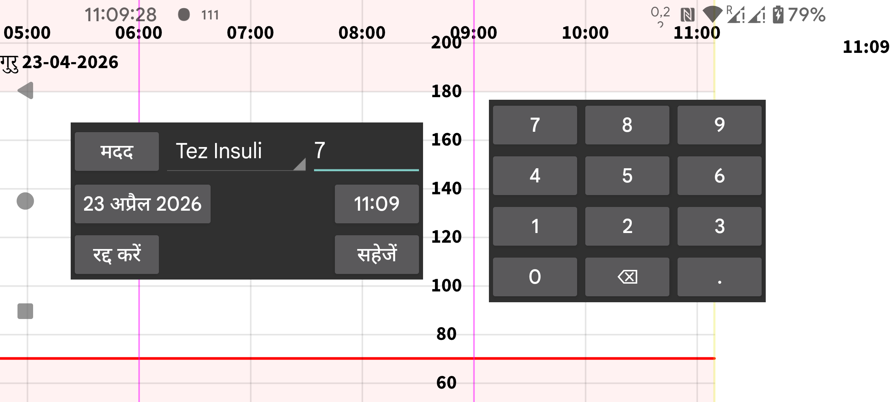

नई मात्रा से आप किसी मनमाने लेबल से जुड़ी संख्याएं दर्ज कर सकते हैं। आप लेबल बायां मेन्यू→सेटिंग्स→संख्या लेबल के तहत सेट कर सकते हैं। एक विशेष लेबल के साथ दर्ज की गई मात्राएं लेबल द्वारा निर्धारित निश्चित ऊंचाई पर ग्राफ़ में दिखाई जाएंगी।
आप बाद में मात्रा को लंबा दबाकर बदल सकते हैं। आप इसे बायां मध्य मेन्यू→सूची के तहत दर्ज की गई मात्राओं की सूची से भी चुन सकते हैं।
NFC पेन स्कैन करके NovoPen® 6 या NovoPen Echo® Plus से इंसुलिन खुराक डेटा प्राप्त करना भी संभव है। स्कैन करने के बाद आप बदल सकते हैं कि Juggluco में खुराकें किस लेबल के तहत सहेजी जाती हैं और खुराकों को एक निश्चित तारीख और समय के बाद की खुराकों तक सीमित कर सकते हैं। जब पेन की मेमोरी में सैकड़ों खुराकें मौजूद होती हैं, तो Juggluco द्वारा उन सभी को NFC के माध्यम से प्राप्त करने में 30 सेकंड से अधिक समय लग सकता है।
कुछ रक्त ग्लूकोज मीटर ब्लूटूथ के माध्यम से Juggluco को फिंगर प्रिक रक्त ग्लूकोज मापन भेज सकते हैं। देखें बायां मेन्यू→सेटिंग्स→डेटा आदान-प्रदान→ ग्लूकोज मीटर।
बायां मेन्यू->सेटिंग्स->संख्या लेबल के तहत यह भी निर्दिष्ट किया जाता है कि आप किस लेबल के तहत भोजन के कार्बोहाइड्रेट दर्ज करते हैं। नई मात्रा में, इस लेबल के लिए एक भोजन बटन प्रदर्शित होता है। इस भोजन बटन को टैप करने से आप एक ऐसे डिस्प्ले पर जाते हैं जिसमें आप एक भोजन को उसकी सामग्री से निर्दिष्ट कर सकते हैं। कार्बोहाइड्रेट सामग्री की फिर गणना की जाती है या आप कार्बोहाइड्रेट सामग्री निर्दिष्ट कर सकते हैं और फिर एक सामग्री की आवश्यक मात्रा की गणना की जाती है।
बाहर रखें: एक रक्त ग्लूकोज मापन को कैलिब्रेशन से बाहर रखें, क्योंकि ग्लूकोज स्तर बढ़ या गिर रहा है या सेंसर अभी भी गर्म हो रहा है।